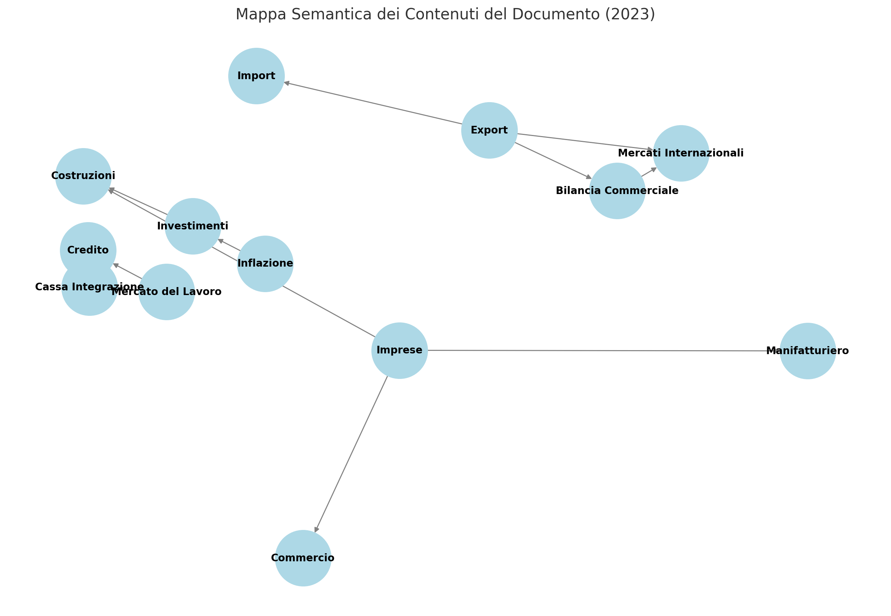
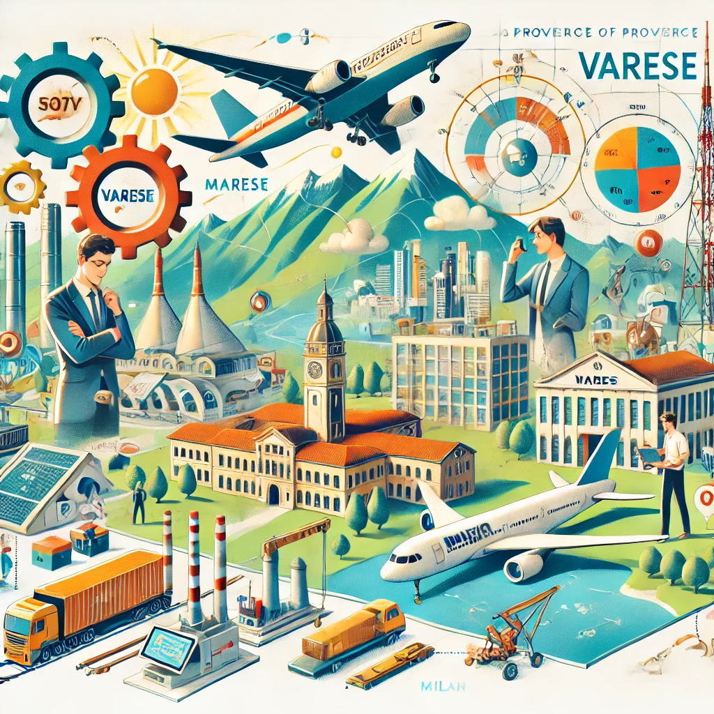

Luca: Puoi leggere i due documenti che ho caricato e prepararti a discutere dei loro contenuti? Per ora dammi solo una conferma e, se la risposta è positiva, indica in una frase l'oggetto di questi documenti.
[ I due documenti sono presi dalla pagina "Il contesto economico della provincia di Varese - 2023"]
ChatGPT: Ho esaminato i due documenti e posso confermare di averli letti. Entrambi trattano l'andamento economico della provincia di Varese, fornendo aggiornamenti annuali (2022 e 2023) su vari indicatori economici, come il mercato del lavoro, l'export, il numero di imprese attive e le dinamiche demografiche.
Luca: Per prima cosa, costruisci e visualizzi una mappa semantica dei principali contenuti del documento più recente? Ricorda di mantenere i testi in italiano.
ChatGPT:

Ecco la mappa semantica dei principali contenuti del documento più recente (2023). I vari temi, come imprese, export, mercato del lavoro e inflazione, sono collegati tra loro in base alle relazioni presenti nel documento, con un'attenzione particolare ai settori economici, agli scambi commerciali e alle dinamiche del mercato del lavoro nella provincia di Varese.
[Questo è il codice Python generato da ChatGPT per creare la mappa semantica:
from collections import defaultdict
import matplotlib.pyplot as plt
import networkx as nx
# Create a list of key topics from the document
key_topics = [
"Imprese", "Manifatturiero", "Commercio", "Costruzioni", "Export",
"Import", "Mercato del Lavoro", "Cassa Integrazione", "Credito",
"Inflazione", "Investimenti", "Bilancia Commerciale", "Mercati Internazionali"
]
# Define relationships between the topics based on the document structure
relations = [
("Imprese", "Manifatturiero"),
("Imprese", "Commercio"),
("Imprese", "Costruzioni"),
("Export", "Import"),
("Export", "Bilancia Commerciale"),
("Export", "Mercati Internazionali"),
("Mercato del Lavoro", "Cassa Integrazione"),
("Mercato del Lavoro", "Credito"),
("Inflazione", "Investimenti"),
("Investimenti", "Costruzioni"),
("Cassa Integrazione", "Credito"),
("Bilancia Commerciale", "Mercati Internazionali")
]
# Create a directed graph
G = nx.DiGraph()
# Add nodes and edges
G.add_nodes_from(key_topics)
G.add_edges_from(relations)
# Set up plot
plt.figure(figsize=(12, 8))
pos = nx.spring_layout(G, seed=42)
# Draw the graph
nx.draw(G, pos, with_labels=True, node_color="lightblue", node_size=3000, font_size=10, font_weight="bold", edge_color="gray", arrows=True)
# Display the graph
plt.title("Mappa Semantica dei Contenuti del Documento (2023)", fontsize=15)
plt.show()
]
Luca: Riesci a identificare le principali differenze nella situazione presentata nei due documenti? In particolare, quali sono i principali segnali di miglioramento e quali le principali criticità nella transizione da 2022 a 2023?
ChatGPT: Ecco un'analisi delle principali differenze tra i due documenti relativi alla situazione economica della provincia di Varese nel 2022 e nel 2023:
Miglioramenti tra il 2022 e il 2023:
Export: Nel 2023 l'export varesino continua a crescere, raggiungendo oltre 12,6 miliardi di euro con un aumento del +3,4% rispetto all'anno precedente. Anche la bilancia commerciale si conferma positiva con 3,2 miliardi di euro di saldo, mantenendo il territorio tra i più forti esportatori d'Italia. Nel 2022 l'export era già positivo, con un valore record di 12,3 miliardi di euro e un incremento del +13,6%, però influenzato dall'inflazione.
Mercato del lavoro: Nel 2023 si registra una crescita degli occupati, raggiungendo 391 mila persone (+15 mila rispetto al 2022). Il tasso di disoccupazione è sceso al 3,6%, un netto miglioramento rispetto al 4,7% del 2022. Nel 2022, il mercato del lavoro mostrava segni di ripresa con 376 mila occupati, ma ancora al di sotto dei livelli pre-pandemia.
Costruzioni: Le imprese nel settore delle costruzioni hanno continuato a crescere nel 2023 con un aumento dell'+1,3%, rispetto all'aumento del +2,34% del 2022. Questo è stato uno dei pochi settori che ha mostrato stabilità e crescita.
Cassa integrazione: Le ore di CIG autorizzate nel 2023 sono diminuite significativamente, con un calo dell'-11% rispetto al 2022, mostrando una riduzione dell'uso di strumenti di sostegno emergenziale.
Criticità e problematiche persistenti:
Settore manifatturiero: Il manifatturiero ha subito una riduzione del numero di imprese sia nel 2022 (-6,5%) che nel 2023 (-2,5%), continuando a mostrare segnali di difficoltà, con un calo della produzione industriale e una ripresa solo parziale. Nonostante una lieve ripresa del settore export dei macchinari e dei mezzi di trasporto nel 2023, il settore resta vulnerabile.
Credito e prestiti: Nel 2023 i prestiti alle imprese sono diminuiti in modo significativo (-11,4%), raggiungendo il valore più basso degli ultimi otto anni. Anche il risparmio delle famiglie ha subito un calo rispetto al 2022, segnalando una fragilità sul fronte finanziario. La restrizione del credito è stata accentuata dall'innalzamento dei tassi d'interesse nel 2023, che ha iniziato a manifestare effetti negativi sul fronte creditizio, come già segnalato nel 2022.
Inflazione e aumento dei prezzi: Nonostante la leggera riduzione dell'inflazione nella parte finale del 2023, l'effetto sui consumi e sugli investimenti è rimasto critico. Già nel 2022 l'inflazione aveva avuto un forte impatto sull'economia.
Conclusioni: Il passaggio dal 2022 al 2023 ha visto alcuni segnali di ripresa, come il miglioramento del mercato del lavoro, l'aumento delle esportazioni e la diminuzione della Cassa Integrazione. Tuttavia, persistono criticità legate al settore manifatturiero, alla difficoltà di accesso al credito e agli effetti residui dell'inflazione.
Luca: Puoi scrivere una sintesi discorsiva dei principali contenuti dei due documenti, da proporre a un giornalista, che vuole scrivere su questo un articolo?
ChatGPT: Ecco una sintesi discorsiva che potrebbe essere utile a un giornalista per scrivere un articolo sui principali contenuti economici della provincia di Varese nei due anni di riferimento:
L'economia della provincia di Varese tra segnali di ripresa e sfide strutturali
La provincia di Varese ha visto una serie di trasformazioni economiche significative nel biennio 2022-2023. Mentre alcuni settori mostrano segni di ripresa, persistono diverse criticità che richiedono un'attenzione particolare.
Il 2023 si è concluso con un quadro complessivamente positivo per il mercato del lavoro. Gli occupati nella provincia sono aumentati di 15 mila unità rispetto all'anno precedente, raggiungendo il massimo storico di 391 mila lavoratori. Anche il tasso di disoccupazione è sceso, stabilizzandosi al 3,6%, un valore molto vicino ai livelli fisiologici. Questa tendenza segna un miglioramento netto rispetto al 2022, quando il tasso di disoccupazione si attestava ancora al 4,7%. Tuttavia, il quadro lavorativo è stato accompagnato da una riduzione dell'occupazione femminile, un trend che persiste anche nel 2023, con una differenza di genere sempre più marcata.
Sul fronte delle imprese, la provincia di Varese si conferma stabile, con circa 58.408 attività registrate alla fine del 2023, un numero in linea con quello del 2022. Nonostante questo equilibrio, emergono segnali preoccupanti da settori chiave come il manifatturiero, che ha visto una continua riduzione del numero di imprese (-2,5% nel 2023), e il commercio, in calo dell'1,8%. Di contro, le costruzioni continuano a crescere, sia per il 2022 che per il 2023, con un aumento del numero di imprese e investimenti nel settore.
Uno dei dati più incoraggianti proviene dall'export: nel 2023, le esportazioni varesine hanno raggiunto oltre 12,6 miliardi di euro, con un saldo positivo nella bilancia commerciale di 3,2 miliardi. I principali partner restano Germania, Francia e Stati Uniti, e in particolare il settore dei mezzi di trasporto ha registrato una crescita significativa (+63%). L'export è stato uno dei pilastri della ripresa, pur registrando una crescita più contenuta rispetto al 2022, quando l'inflazione aveva amplificato il valore delle esportazioni.
Tuttavia, permangono delle criticità, soprattutto sul fronte del credito. Le imprese varesine hanno visto una diminuzione significativa dei prestiti nel 2023, con un calo dell'11,4%, il valore più basso degli ultimi otto anni. Questo dato preoccupa in quanto riflette la stretta creditizia dovuta all'aumento dei tassi di interesse e alla crescente cautela delle banche nel concedere finanziamenti. Anche il risparmio delle famiglie, pur in ripresa, è rimasto inferiore ai livelli del 2022.
L'andamento generale dell'economia varesina mostra, quindi, un quadro a due velocità: da un lato, la tenuta del sistema imprenditoriale e l'apertura ai mercati internazionali sono motivi di ottimismo; dall'altro, le difficoltà di accesso al credito e la fragilità del settore manifatturiero segnalano la necessità di interventi mirati per sostenere una crescita sostenibile nel medio termine.
In definitiva, la provincia di Varese si presenta come un territorio che, nonostante le sfide economiche globali, continua a esprimere una forte vocazione imprenditoriale e una spiccata capacità di esportare, ma che allo stesso tempo deve affrontare questioni strutturali per garantire una ripresa solida e inclusiva per tutti i settori.
Questa sintesi offre una panoramica dei dati chiave emersi dai due documenti e pone l'accento sui temi principali, bilanciando segnali di miglioramento con le sfide persistenti.
Luca: Ottimo. Vorrei ora che tu scrivessi un'altra sintesi, questa volta per una persona che si sta chiedendo se investire in un'azienda della provincia ed è interessata alle condizioni del territorio.
ChatGPT: Ecco una sintesi rivolta a una persona interessata a investire in un'azienda nella provincia di Varese:
Opportunità e sfide per investire nella provincia di Varese
La provincia di Varese offre un ambiente economico con alcune solide opportunità per chi desidera investire, pur presentando anche delle sfide da considerare attentamente.
Uno dei punti di forza più evidenti è la continua capacità della provincia di esportare. Nel 2023, le esportazioni varesine hanno superato i 12,6 miliardi di euro, con un saldo commerciale positivo di 3,2 miliardi. La provincia si colloca tra i principali poli esportatori d'Italia, grazie a un tessuto imprenditoriale ben connesso con i mercati internazionali. Settori come i mezzi di trasporto e i macchinari hanno mostrato una crescita significativa, e i principali mercati di riferimento - Germania, Francia, Stati Uniti - offrono un contesto stabile e in espansione. Se la tua azienda ha una vocazione internazionale, Varese potrebbe rappresentare un'ottima base operativa, grazie anche alla vicinanza con i centri logistici di Milano e con l'aeroporto di Malpensa.
Il mercato del lavoro locale è un altro elemento positivo. Nel 2023, la provincia ha raggiunto un nuovo massimo con 391 mila occupati, segnalando una ripresa vigorosa dopo gli anni difficili della pandemia. Il tasso di disoccupazione è sceso al 3,6%, un dato tra i più bassi d'Italia, con un forte miglioramento rispetto all'anno precedente. Questo indica una buona disponibilità di manodopera qualificata, soprattutto nei settori tradizionalmente forti dell'area, come la meccanica e l'industria manifatturiera.
Tuttavia, non mancano le sfide, soprattutto per chi cerca finanziamenti. Nel 2023, i prestiti alle imprese hanno subito un calo significativo (-11,4%), riflettendo una stretta creditizia dovuta all'aumento dei tassi di interesse. Questo fattore potrebbe rendere più complicato ottenere finanziamenti, soprattutto per nuove iniziative imprenditoriali. Per un investitore, questo significa che sarà fondamentale disporre di un solido piano di finanziamento e valutare attentamente le opportunità di credito disponibili.
Inoltre, il settore manifatturiero, nonostante la sua tradizionale importanza nell'economia locale, ha mostrato segni di contrazione. Nel 2023, il numero di imprese attive nel settore è sceso del 2,5%, segnalando alcune difficoltà. Tuttavia, ci sono settori più dinamici, come le costruzioni, che hanno visto un incremento del +1,3% nello stesso anno. Se il tuo interesse è rivolto ai settori in crescita, come quello delle costruzioni o alle opportunità legate all'export, la provincia può offrire un terreno fertile.
Infine, Varese mantiene una forte densità imprenditoriale, con 49 imprese per chilometro quadrato, ben sopra la media lombarda e italiana. Questo testimonia un ambiente economico vivace e competitivo, dove l'innovazione e lo sviluppo di nuovi progetti possono trovare terreno fertile, grazie anche alla presenza di reti imprenditoriali consolidate e alla vicinanza con importanti hub produttivi e logistici.
In sintesi, la provincia di Varese può essere una scelta interessante per investimenti in settori con alta propensione all'export e con una manodopera disponibile e qualificata. Tuttavia, chi decide di investire deve tenere conto della stretta creditizia e della fragilità di alcuni comparti produttivi tradizionali, valutando attentamente il settore di riferimento e la possibilità di accedere a fonti di finanziamento adeguate.
Questa sintesi si concentra sui fattori più rilevanti per un potenziale investitore, evidenziando opportunità ma anche le difficoltà che potrebbe incontrare.
Luca: Sulla base di quello che hai letto nelle edizioni del 2022 e 2023, puoi proporre qualche buona idea su come impostare l'eventuale nuova edizione di questo documento?
ChatGPT: Per la nuova edizione del documento, potrebbe essere utile considerare alcuni miglioramenti e nuove idee per renderlo più informativo e fruibile, sia per gli operatori economici locali che per potenziali investitori o studiosi. Ecco alcune proposte:
1. Focus sui settori emergenti e sulle nuove opportunità
Approfondimento sui settori in crescita:
-- Mentre i settori tradizionali come il manifatturiero stanno affrontando sfide, altri comparti (costruzioni, esportazioni di mezzi di trasporto, macchinari) stanno dimostrando resilienza. La nuova edizione potrebbe offrire uno sguardo più approfondito sulle nuove opportunità di business in questi settori, evidenziando storie di successo, casi studio o trend di innovazione locale.
-- Settori green e sostenibilità: Vista l'importanza crescente della sostenibilità, includere una sezione dedicata a progetti eco-compatibili e alle aziende che stanno innovando in termini di energia rinnovabile e sostenibilità potrebbe essere interessante per attrarre investitori sensibili a questi temi.
2. Focus sul digitale e sulla trasformazione tecnologica
-- Dato che il documento si rivolge a operatori economici, potrebbe essere utile includere una sezione dedicata alle iniziative digitali e alla transizione tecnologica delle imprese locali. Potrebbe coprire temi come l'adozione dell'intelligenza artificiale, l'automazione dei processi produttivi e la digitalizzazione del commercio.
-- Presentare casi pratici di imprese locali che hanno innovato in questo senso, con dati e analisi sui vantaggi ottenuti, potrebbe dare un valore aggiunto.
3. Previsioni economiche e scenari futuri
-- Una sezione proattiva con previsioni economiche per il 2024-2025 sarebbe utile per dare alle imprese e agli investitori una visione strategica. I dati attuali possono essere arricchiti da scenari su come evolveranno i principali settori, tenendo conto delle dinamiche globali come l'inflazione, i cambiamenti nel commercio internazionale o l'andamento dei tassi di interesse.
-- Collaborare con esperti locali e nazionali potrebbe aggiungere valore a questa sezione.
4. Potenziamento dell'analisi territoriale
-- Includere una mappatura geografica più dettagliata che evidenzi dove sono concentrati i principali settori produttivi, le aree più dinamiche per nuove imprese o investimenti, e le infrastrutture chiave come aeroporti, porti e zone industriali.
-- Un'analisi dei trend demografici locali e delle differenze territoriali all'interno della provincia (zone rurali vs zone industriali) potrebbe aiutare le imprese a localizzare le loro attività nel modo più efficiente.
5. Analisi più dettagliata del mercato del lavoro
-- Vista l'importanza del mercato del lavoro locale e le sue recenti fluttuazioni, una sezione più ampia potrebbe esplorare non solo i numeri sugli occupati, ma anche le dinamiche di mismatch tra domanda e offerta, evidenziando le figure professionali più ricercate, i settori che faticano a trovare lavoratori qualificati e le possibili soluzioni, come i programmi di formazione e upskilling.
-- Includere anche una sezione dedicata alle iniziative di inclusione lavorativa per le donne e le fasce giovanili, considerati i gap emersi nei documenti del 2022 e 2023.
6. Integrazione con l'ecosistema startup e innovazione
-- Dare visibilità alle startup locali e alle iniziative di incubazione o accelerazione potrebbe attrarre nuovi investitori interessati all'innovazione. Potrebbe essere utile collaborare con le università locali o con le camere di commercio per mappare le iniziative imprenditoriali in fase di avvio.
-- Evidenziare anche il supporto pubblico o gli incentivi per l'innovazione (finanziamenti, bandi, agevolazioni fiscali) sarebbe un elemento chiave per attrarre nuovi investitori.
7. Interattività e dati visualizzabili
-- Per migliorare la fruibilità del documento, si potrebbe creare una versione digitale più interattiva, con grafici dinamici che permettano di esplorare i dati economici (ad es. comparare settori, analizzare l'evoluzione temporale dei principali indicatori).
-- Potrebbe essere utile includere infografiche facili da interpretare, soprattutto per chi cerca una rapida panoramica della situazione economica.
8. Case study e testimonianze
-- Arricchire il documento con testimonianze dirette di imprenditori locali e case study potrebbe aggiungere un tocco umano e pratico alla relazione. I lettori potrebbero beneficiare delle esperienze di chi è riuscito a superare le sfide economiche o ha trovato successo in mercati internazionali.
9. Sezione dedicata agli investitori
-- Considerando il crescente interesse per gli investimenti esteri e nazionali, si potrebbe aggiungere una sezione specifica dedicata a chi vuole investire nella provincia di Varese, con informazioni sulle agevolazioni fiscali, aree a sviluppo prioritario, accesso ai fondi europei e partnership pubblico-private.
Conclusione:
Con l'integrazione di queste idee, la nuova edizione del documento potrebbe diventare una risorsa ancora più preziosa per diversi tipi di lettori: dagli imprenditori locali agli investitori, fino agli operatori istituzionali e alle figure politiche. Queste aggiunte renderebbero l'analisi economica non solo più dettagliata e attuale, ma anche più accessibile e orientata a chi prende decisioni operative o strategiche.
Luca: Se a una classe del terzo anno di un'Istituto Tecnico-Economico dovessi fare una lezione di due ore su questi argomenti, potresti propormi un titolo attraente e uno schema dei contenuti da proporre?
ChatGPT: Ecco una proposta per il titolo della lezione e uno schema dei contenuti:
Titolo della lezione: "Dentro l'economia della nostra provincia: opportunità e sfide per il futuro"
Schema dei contenuti:
1. Introduzione (15 minuti) Presentazione degli obiettivi della lezione: Cosa significa comprendere l'economia locale e perché è importante per futuri tecnici economici. Cenni su cosa analizzeremo: Panoramica su imprese, mercato del lavoro, export e trend economici nella provincia di Varese.
2. Le imprese nella provincia di Varese (20 minuti) Numero e distribuzione delle imprese: Dati chiave sul numero di imprese attive, i settori principali e la loro evoluzione tra il 2022 e il 2023. Settori in crescita e in calo: Manifatturiero e costruzioni a confronto. Discussione su come il mercato locale si sta trasformando. Imprenditorialità giovanile e femminile: Ruolo delle imprese artigiane e dei giovani imprenditori. Discussione su iniziative e trend emergenti.
3. L'export e il commercio internazionale (20 minuti) L'importanza dell'export per Varese: Numeri chiave sull'export e confronto con il 2022. Settori trainanti (macchinari, mezzi di trasporto) e mercati di riferimento (Germania, USA, Francia). Opportunità legate al commercio internazionale: Perché le esportazioni sono importanti e quali sono i settori locali che offrono opportunità di crescita per il futuro.
4. Il mercato del lavoro (20 minuti) Occupazione e disoccupazione: Dati aggiornati sul mercato del lavoro, con particolare attenzione ai miglioramenti nel 2023 rispetto al 2022. Problematiche del mismatch tra domanda e offerta di lavoro: Le figure professionali più richieste e come le imprese locali stanno cercando di colmare il gap. Impatto delle nuove tecnologie: Come la digitalizzazione e l'automazione stanno trasformando il mondo del lavoro locale.
5. Sfide e opportunità future per la provincia (20 minuti) Le criticità del credito: Come l'aumento dei tassi d'interesse sta impattando le imprese locali e cosa significa per chi vuole avviare un'attività.Sostenibilità e innovazione: Il ruolo delle nuove tecnologie e dei progetti eco-compatibili. Potenziali sviluppi per un'economia più sostenibile. Prospettive per il 2024: Previsioni sull'economia locale e possibili opportunità per i giovani che si affacciano al mondo del lavoro.
6. Discussione e riflessioni finali (15 minuti) Domande e interazioni con la classe: Stimolare una riflessione su come i ragazzi vedono il loro futuro in relazione al mercato del lavoro e alle dinamiche locali.Conclusioni e takeaway: Riassunto dei principali punti trattati e suggerimenti su come approfondire l'argomento.
Questo schema strutturato manterrà l'attenzione degli studenti alta, alternando momenti informativi e di discussione.
Luca: Per presentare agli studenti questa lezione mi proponi un'immagine evocativa, che susciti il loro interesse a partecipare?
ChatGPT: Ecco un'immagine evocativa che potrebbe catturare l'attenzione degli studenti, illustrando in modo dinamico e moderno la crescita economica, l'innovazione e le opportunità della provincia di Varese. Puoi utilizzarla per introdurre la tua lezione e stimolare il loro interesse a partecipare attivamente!
[ Questo è il testo generato da ChatGPT come prompt per generare l'immagine: A dynamic and modern illustration depicting the economic growth and opportunities of a vibrant local area, such as Varese, with a focus on industry, technology, and trade. The image shows factories, digital symbols representing innovation (like gears, charts, and arrows), and a map highlighting the region's connection to international markets through planes and cargo ships. The backdrop includes both urban and natural elements, with young professionals and students actively engaging, symbolizing future economic opportunities. Bright, inspiring colors with a forward-looking tone.]
Luca: Trovo questa immagine un po' generica: non c'è nulla che richiami specificamente la provincia di Varese. Puoi farne un'altra tenendo conto di questo?
ChatGPT: Ecco un'immagine aggiornata che include riferimenti specifici alla provincia di Varese, come l'architettura storica, i laghi e la sua posizione strategica. Spero possa evocare meglio l'identità del territorio per coinvolgere maggiormente gli studenti.

[ Questo è il testo generato da ChatGPT come prompt per generare l'immagine: An engaging illustration depicting the economy of the province of Varese, highlighting its key industries such as manufacturing and exports. The image features iconic elements from Varese like its historic architecture, the nearby lakes, and a map showing its strategic position near Milan and the Swiss border. Factories and machinery represent the industrial sector, while planes and cargo ships emphasize Varese's role in international trade. The image includes young professionals working and interacting with technology, symbolizing future growth. The overall tone is bright and forward-looking.]
Luca: Grazie per il supporto che mi hai dato.
ChatGPT: È stato un piacere aiutarti! Se avrai bisogno di altro supporto in futuro, non esitare a contattarmi. Buona lavoro!